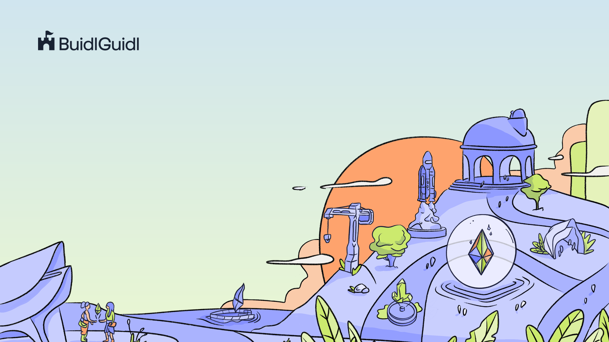
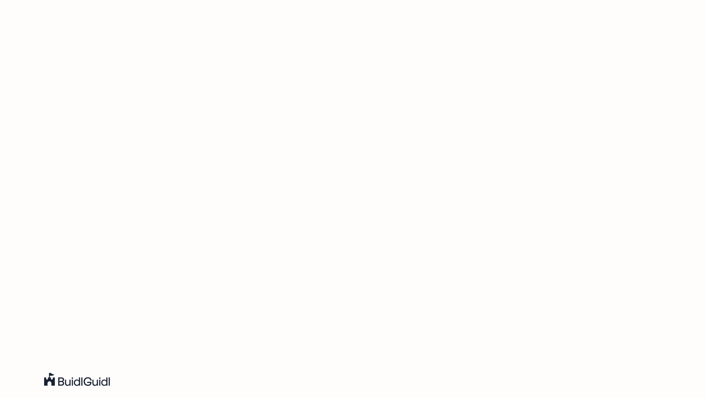
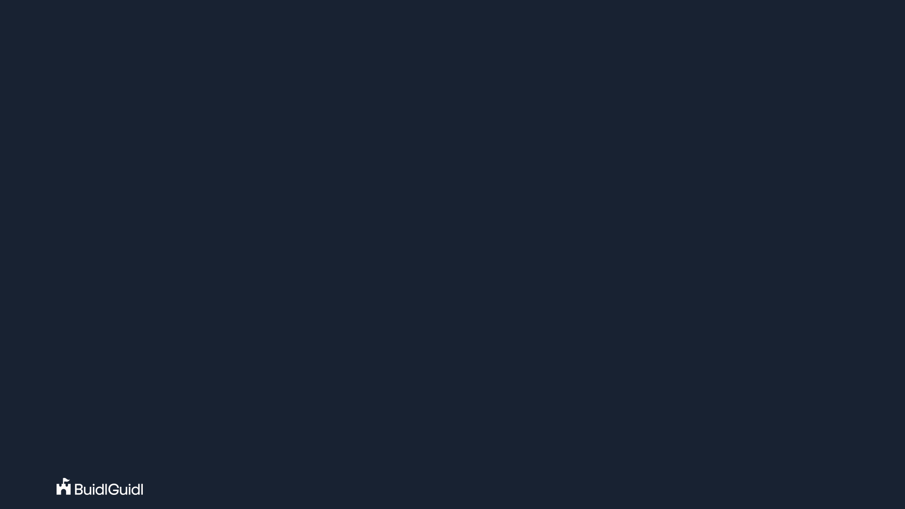

Devcon 8 slide kit · style sheet
The look, in one page
Every colour, font, size and radius on this page is a token in design/tokens.json. The build writes this page from that file, so what you see here is what the slides use.
Colours
Flat fills only. Text is ink, or paper on the dark ground. Lime is the highlight and sits behind ink text.
ink
#182232
all text on light grounds, arrows, the dark ground
paper
#FFFCFC
text on the dark ground, cards
ground
#EBECFE
the content ground, from buidlguidl.com; already baked into content.png
lavender
#D8DCFF
panels, diagram boxes
peach
#FFD4B5
panels, diagram boxes
pale-lime
#EAFFA9
panels, diagram boxes
periwinkle
#808CFF
bullets, the quote bar, number pills
periwinkle-light
#9FA9FF
prompt glyphs and labels on the dark ground
orange
#FF6E1D
number pills, with ink text
lime
#B5DC3A
the highlight marker, always with ink text; the lime button on buidlguidl.com
sky-top
#D0E5EF
top of the cover gradient, from the buidlguidl.com hero; baked into cover.png
sky-bottom
#EAF7D1
bottom of the cover gradient; baked into cover.png
Type
Sizes are px on the 1920x1080 canvas, shown here at full size. Line height is a multiple of the size. Letter-spacing is 0 everywhere.
An agent can scaffold a dapp.
Building on Ethereum with agents
A talk title that runs to three lines on the cover slide
What the agent gets for free
Everything you need to build on Ethereum.
A contract, a deploy script and a frontend in one repo
Your Name
Part 2
Devcon 8 · Builder Enablement & BuidlGuidl
Marks
The wordmark and the castle mark, ink and white. They are baked into the backgrounds; the SVGs in logos/ are for a one-off need.



cover.png: the wordmark 64 px tall at the margin corner (120, 96). Title, closing and up next.
section.png: the same wordmark at the same place. Section dividers.

content.png: the castle 44 px tall at the left margin and the Devcon 8 tag ending at the right margin, both from y 26 in the top band. Content slides.

content-dark.png: the same marks in white on ink. Code and terminal slides.
Canvas and margins
1920x1080. Margins 120 left and right, 96 top and bottom, so the content area is 1680x888, from x 120 to 1800 and y 96 to 984. The marks sit inside the top band.
Highlight, cards, tags
The lime marker: one per slide, mid-line, behind ink text. It extends 0.08em past the words with 0.14em corners.
An agent can scaffold a dapp. Shipping it is still your job.
The speaker's link on the closing slide: buidlguidl.com
SpeedRun Ethereum
Seven challenges, from a simple NFT to a DEX.
Number pills, in card order, with ink text.
Bullets: a periwinkle dot, text 64 px in.
- A contract, a deploy script and a frontend in one repo
- Typed hooks for every deployed contract
Diagram boxes, flat fills in this order.
The dark ground: paper text, periwinkle light for labels and prompt glyphs, the corner tag in the tag style.
Devcon 8
terminal